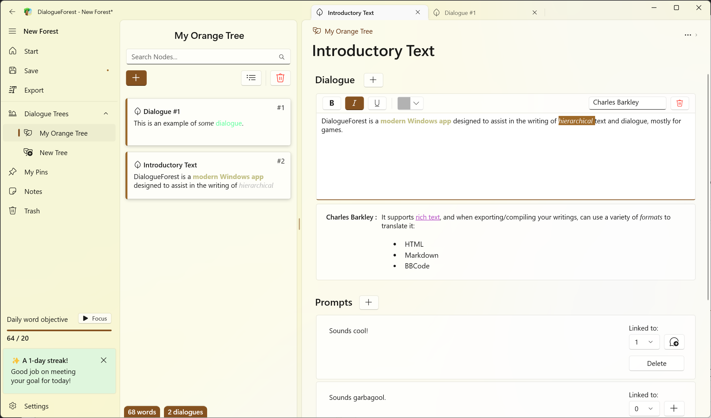

A bit more than a year ago, I shipped DialogueForest, which had itself been in development for a year+...
So the app is actually almost three years old now! Wow!

I don't update it that much as it's really mostly for my personal use*, but as the Windows App SDK runtime keeps getting updates, it was getting a bit difficult to run the executable I shipped on itch.io back then.
So I solved that and added a few more features:
DialogueForest is now on the Microsoft Store so you can 1-click install it, entirely free.

Merry Christmas! Go write some dialogue for your games.
... You're still here? I guess I did promise some ranting.
So one of the reasons I'd held back MS Store publishing for this app back then was...
that I was planning to add AI to it! 👻👻👻
Not really because I believed in the technology (especially not for creative writing, miss me with that shit), but I wanted to 🧪experiment🧪 with something.
Microsoft was promising those shiny new WinAppSDK APIs in May to interact with language models that'd be bundled with Windows -- With those, it'd cost essentially no effort or money to integrate text/dialogue generation in the app.
So I would put the app on the store...
Add in the AI integration as a 5$ paid in-app-purchase...
Market the app as being "enhanced by the incredible power of AI!!1!1!"...
Get featured on the store by Microsoft who's desperate to sell that shit to everyone who has eyes...
And rack in the money from the room-temperature-IQ Elon Musk fans who think a glorified autocomplete is the future of technology.
The plan was, dare I say it, perfect; I just needed to wait for the APIs to become available...
I honestly thought that since this was yet another of Microsoft's famous "refocus the entire OS on a single bit of tech" moments, this stuff would come out relatively early despite the fact Windows UI technology/WinAppSDK moves at a glacial pace...
But nope, Microsoft.Windows.AI.Generative is still unavailable more than 6 months later.
As a result, what's the current guidance from Microsoft if I want, as a Windows developer, to join the
""""AI Revolution""""? Well, they made a whole app about it with examples, look how nice it is!

...And it basically boils down to "Download some shit from huggingface, slap it into your app and run the model yourself on GPU -- want language processing? That'll be an extra 2 gigabytes thank you"
It's laughable, nobody's realistically going to do this??**
Even Apple, who did the least possible amount of compliance so that their shareholders wouldn't crash the stock by fear of missing the AI hype train, added some tools for developers to use their built-in generative stuff.
It's shit, but at least you can use it!
Microsoft is one of the companies who went the hardest on dooming themselves with AI garbage,
and EVEN THEN THEY CAN'T FUCKING DO IT RIGHT!
... aight i got that out of my system we good now

I imagine most of the preinstalled-AI-on-Windows stuff was severely delayed by the Recall trash fire, which is how we got to this silly situation.
I don't really blame*** the Windows devs, this shit comes down from management and they were absolutely right to redirect their limited resources into actually useful stuff instead of those APIs.
But well, as for my devilish AI plan? The hype cycle is essentially dead by now. (if it was ever somewhat alive)
When you look at OpenAI trying to stir hype with their "12 days of shipmas" (terrible techbro ass name btw) and delivering nothing of value#, I don't see it picking back up.
There's absolutely zero incentive from me to bundle any form of AI to DialogueForest now, so I thought I might as well just put it up on the Store. And with AOT, it's now faster, so it was worth the wait? Kinda?
* I actually haven't been using it that much recently... game writing takes time and I don't have it because I'm here ranting about how capitalistic boom/bust cycles are ruining the computer experience for everyone
** I do think there's a lot of use for small bundled ML models (remember when we just called it ML? good times), but nobody is going to cram a bloody 2GB+ stable diffusion or llama model in a consumer app and call that good user experience, be realistic
*** You know what I do blame them for? You still can't make an x86/ARM msixbundle in one click using Visual Studio with WinAppSDK/WinUI3, it's been fuckbusted for ages and there's no indication as to why it fails and you have to make separate per-architecture packages instead. Phenomenal
# Sora does not count fuck you, they closed signups 10 minutes after launching it because their servers blew up, textbook definition of a paper launch